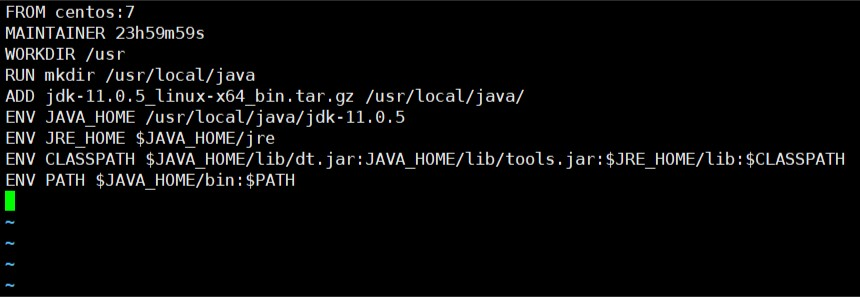
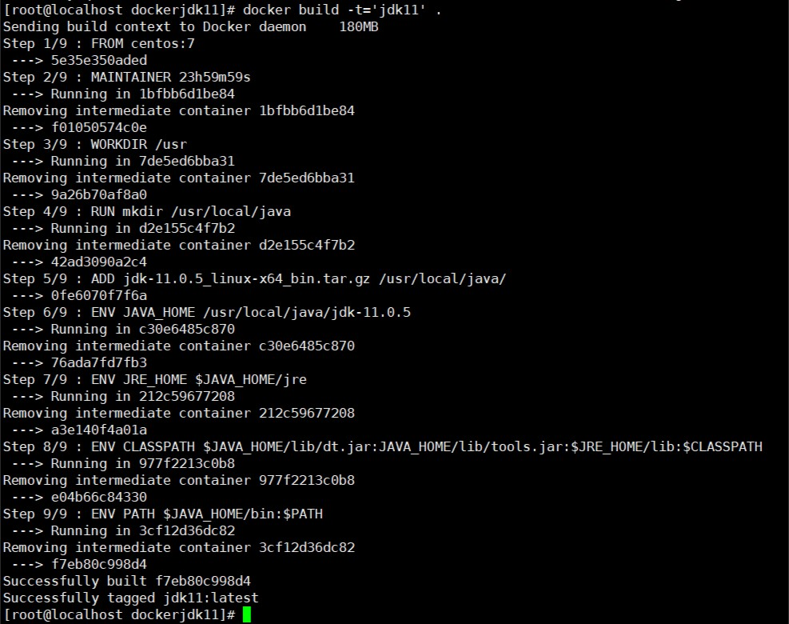
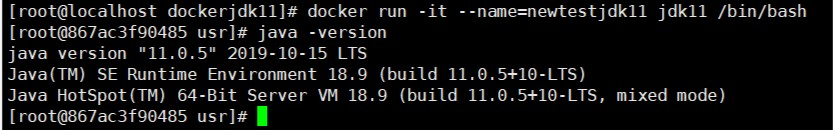

什么是Dockerfile文件
Dockerfile文件其实就是一个文本文件，由一系列命令和参数构成，Docker可以读取Dockerfile文件并根据Dockerfile文件的描述构建镜像。
Dockerfile文件内容一般为4个部分
- 基础镜像信息
- 维护者信息
- 镜像操作命令
- 容器启动时执行的命令
Dockerfile常用命令
| 命令 | 作用 |
|---|---|
| FROM image_name:tag | 定义了使用哪个基础镜像启动构建流程 |
| MAINTAINER user_name | 声明镜像的创建者 |
| EVN key value | 声明环境变量(可以多条) |
| RUN command | 是Dockerfile核心部分(可以写多条) |
| ADD source_dir/file dest_dir/file | 将宿主机的文件复制到容器内，如果是一个压缩文件，将会在复制后自动解压 |
| COPY source_dir/file dest_dir/file | 和上一条一样，不同的是不自动解压 |
| WORKDIR path_dir | 设置工作目录 |
目标
使用Dockerfile构建一个包含jdk11环境的centos7镜像。
分析：
假设以centos7作为基础镜像，添加jdk11并构建一个包含jdk1.8的centos7新镜像，使用Dockerfile可以实现。
步骤：
- 拉取centos7镜像
- 上传jdk11压缩包
- 编写Dockerfile文件
- 构建镜像
- 测试（基于新镜像创建并启动容器，测试jdk版本）
拉取centos7镜像
这个不作过多解释，直接使用 docker pull centos:7命令拉取。
上传jdk文件到宿主机
-
创建目录：
1
mkdir /usr/local/dockerjdk11
使用 WinSCP 软件来上传本地电脑文件到虚拟机centos系统dockerjdk11目录下，也不作过多解释，下载软件后直接输入虚拟机的IP地址，用户名和密码即可登录，端口默认是 22；
编写Dockerfile文件
-
在/usr/local/dockerjdk11目录下使用vi命令进行编写：
1
vi Dockerfile
-
内容为：
1
2
3
4
5
6
7
8
9FROM centos:7
MAINTAINER 23h59m59s
WORKDIR /usr
RUN mkdir /usr/local/java
ADD jdk-11.0.5_linux-x64_bin.tar.gz /usr/local/java/
ENV JAVA_HOME /usr/local/java/jdk-11.0.5
ENV JRE_HOME $JAVA_HOME/jre
ENV CLASSPATH $JAVA_HOME/lib/dt.jar:JAVA_HOME/lib/tools.jar:$JRE_HOME/lib:$CLASSPATH
ENV PATH $JAVA_HOME/bin:$PATH
-
按Esc键，然后英文状态下输入 : 键，然后紧接着输入 wq 保存并退出。
构建镜像
输入构建镜像命令：
-t：要构建的镜像的名称
.：这个点不能省略，表示当前目录下
等到successfully

查看当前镜像列表是否构建成功：
测试（基于新镜像创建并启动容器，测试jdk版本）
-
基于构建的新镜像jdk11创建并启动容器：
1
docker run -it --name=newtestjdk11 jdk11 /bin/bash
-
创建成功后自动进入该容器，测试jdk版本：
1
java -version

发现显示jdk的版本为11.0.5